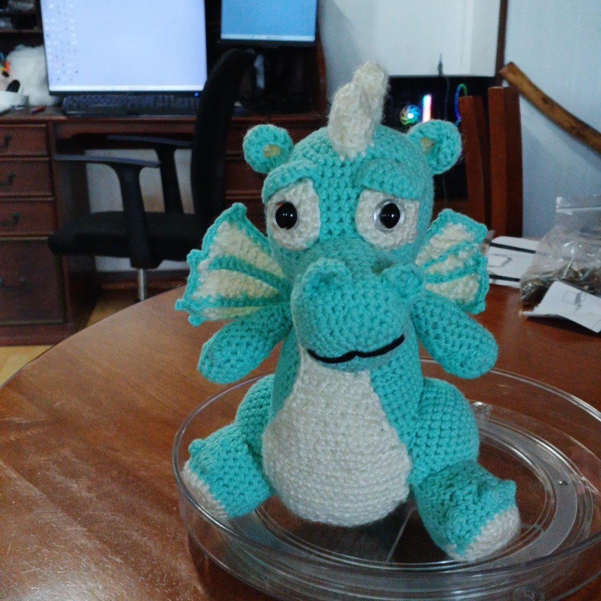

Far North Queensland · Atherton Tablelands
Handmade things, made after dark by lantern light.
Hellsbells is crochet, electronica, and rainforest storytelling — streamed live, stitched by hand, and set in the same corner of the world it's all made in.

Four threads, one workshop
Everything lives here.
Four different crafts, all built at the same desk in the Tablelands. Pick a thread and pull.

Crochet
Amigurumi & commissions
Dragons, griffins, and goblins, stitched live on stream and available to adopt.
Browse the makes →Music
Electric Empath & Crafting Songs
Ambient electronica about tree kangaroos, canopy dreams, and the odd procrochetinator.
Listen →Books
The Adventures of Thistlewink
A small fae creature with a tiny lantern, exploring the Tablelands, written as Briony Bramble.
Meet Thistlewink →Streaming
Live on Twitch
Craft-alongs, chat-voted projects, and the occasional adopt-a-creature raffle.
Follow the channel →New here?
Start with whatever pulled you in — a song, a stream clip, a plush dragon, or a rainforest bedtime story. It's all one workshop underneath.
Read the story so far